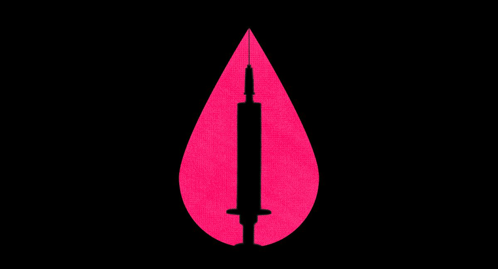
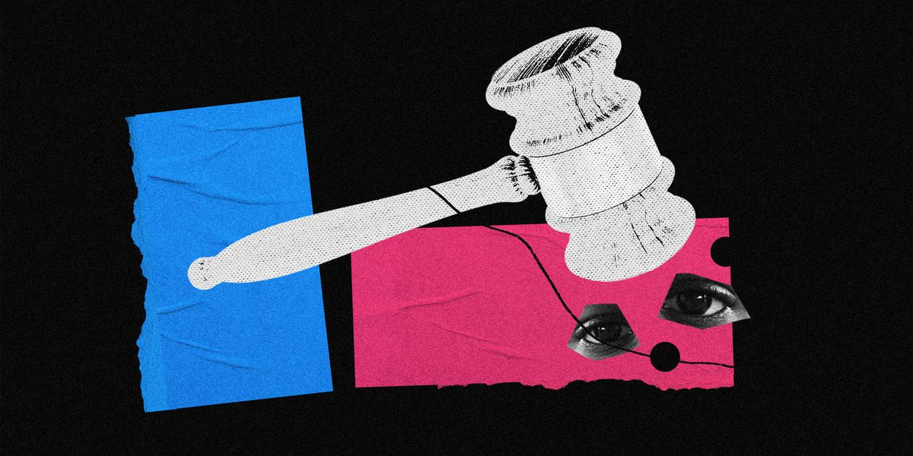
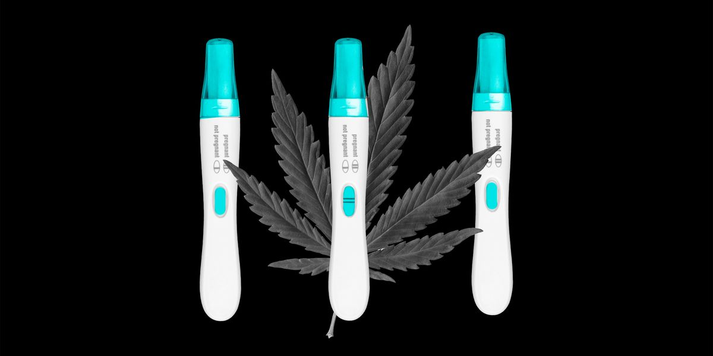
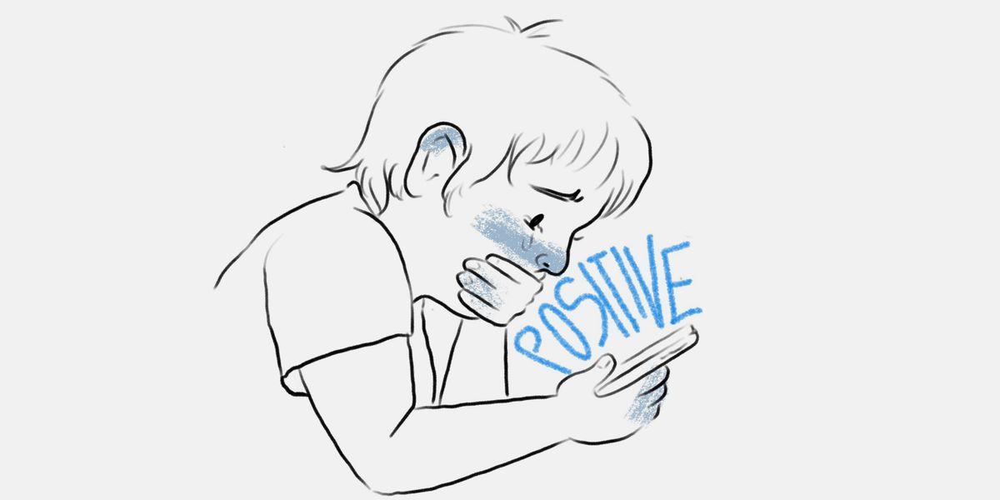

Can the vaccine make your period worse?These women say yes.
When Shana Clauson, a 45-year-old teacher in Hudson, Wis., was in line to get her first coronavirus vaccination — the Moderna shot — on March 6, she logged onto Facebook to pass the time as she waited.
While scrolling, she saw a friend had posted a link to a Twitter thread in which women and people who menstruate were discussing how their periods had been altered after their vaccinations.They complained of earlier periods, heavier flows and more painful cramps, among other conditions.
Clauson didn’t think too much of it, and eventually got her first shot.But two days later, her period arrived — nearly a week early, she said.And while it started off as moderate, within a day it became far more intense than normal, she added.
'I’ve not had bleeding like that probably since before I had kids,' Clauson said, adding that dizziness and fatigue continued for two days after her period ended.
As the Twitter thread suggests, a number of women and menstruators have taken to social media — including Facebook groups and Reddit threads — to share their accounts of their post-vaccination periods and seek explanations about what’s happening to their menstrual cycles.What’s more, the lack of answers has led some to decry sexism within the medical establishment.
'Is this not being discussed, or is it even being looked at or researched because it’s a ‘woman’s issue?’'Clauson asked.'I hope that if this is going to be a side effect for women, that it’s being addressed and women know this could happen.'
It’s been well documented that the coronavirus — and the stressful circumstances of the pandemic more generally — have altered some peoples’ menstrual cycles.A January study published in the journal Reproductive BioMedicine Online found that 28 percent of patients with confirmed coronavirus cases had changes to their menstrual cycle, and 25 percent had changes to their menstrual volume.
Research has also shown that coronavirus vaccines have affected women more adversely than men: A February report from the Centers for Disease Control and Prevention tracking side effects after the first month of vaccinations found that while women received 61.2 percent of doses during that time, they reported 78.7 percent of adverse side effects, including headaches, fatigue and dizziness.
But that report did not examine the effects of vaccines on menstrual cycles — nor have any other published studies.The available information comes only from anecdotes shared on social media and from the CDC’s Vaccine Adverse Event Reporting System, a national vaccine safety surveillance program to which anyone can submit their reports of post-vaccine side effects.It includes at least 37 records of women having heavier periods and painful and irregular menstruation following the vaccines.
But there is currently no scientific evidence proving that the vaccines cause heavier or irregular periods — a fact that’s important to keep in mind as people continue to be vaccinated, said Stuart Ray, a physician and professor of medicine and oncology at Johns Hopkins School of Medicine.
'The anecdotes described are interesting, but don’t tell us whether this is a causal relationship [between the vaccines and reports of heavier menstruation] — particularly at a time when millions of women are receiving the vaccines daily,' he said.
A pair of academics are trying to fill that gap in the research, with a survey out now — and plans to publish research — documenting menstruators’ periods before, during and after their coronavirus vaccinations.
Kate Clancy, the author of the Twitter thread that Clauson saw while standing in line for her shot, is an associate professor of anthropology who studies reproductive justice at the University of Illinois.Along with Katharine Lee, a postdoctoral scholar in the division of public health sciences at Washington University, the two were inspired to undertake the research after seeing the dozens of responses that poured in from women and menstruators after Clancy posted her tweet about having an intense period after her first vaccination.
'There really wasn’t information out there that would let us understand this response to the vaccine,' Lee said.'My question was, ‘What was the mechanism that might be causing it?’And also, it’d be nice if people knew it was going to happen so you could be prepared.'
The coronavirus vaccine trials did not specifically ask participants whether they saw adverse side effects in their menstrual cycles or volumes, but it gathered all adverse side effects reported by participants — meaning that no trial participants reported adverse changes to their periods, according to Anna Durbin, a physician and professor of international health at the Johns Hopkins Bloomberg School of Public Health.Durbin added that a specific event, like getting vaccinated, may simply make menstruators more attuned to their menstrual cycles and their irregularities.
However, Clancy maintained that the research gap between vaccinations and menstrual cycles is a product of a longer history of medicine shutting out women: It was not until 1993, when the Revitalization Act was signed into law, that the National Institutes of Health established federal guidelines requiring 'women and minorities' to be included in clinical research.
Vaccines 'were only tested in men for a really long time, so I think even including any questions around, ‘Are you noticing any menstrual cycle effects?’[in studies] is probably something they’re not thinking about,' she said.
Representatives for the CDC did not respond to inquiries about whether it was aware of, or planned to conduct research on, the impact of vaccinations on menstrual cycles.
For Cathleen Fry, a 29-year-old physicist in New Mexico, past experiences being dismissed by doctors prevented her from reaching out for medical advice these past few weeks, when her post-vaccine periods were accompanied by painful cramping and heavier-than-usual flows.If doctors initiated these discussions, she added, then the conversations may be more normalized.
'I’ve just got so much history of women’s pain not being taken seriously,' Fry said.'I think if there were medical professionals talking about it, then people would take it more seriously, and not think we’re exaggerating when we have to take a half day at work or something.'
While menstruators wait for scientifically proven answers about whether the vaccines could affect their periods, it’s crucial they continue to share their experiences with one another, Clancy said: 'When menstruators talk to each other, we often pick up on the fact that stressors do influence our periods, but we’re often gaslit into believing that’s not real, and the medical literature often supports this idea.'
Menstrual stressors can include changes in routines and the environment (including weight gain and increased alcohol consumption), which have been particularly prevalent this past year, when women have been forced out of the workforce and saddled with the majority of child-care and domestic duties during the pandemic — making it unsurprising that periods may be affected, according to Mary Rosser, director of the Integrated Women’s Health Program at Columbia University’s Department of Obstetrics and Gynecology.
'I think the stress of the entire year cannot be ignored here, for all people,' said Rosser, who is also a practicing OB/GYN.'It’s the pandemic, and the political and social justice pieces, that I think have really affected people, and I would say have affected women predominantly.'
Posted On: 2021-04-05T13:39:25
Posted By: Julianne McShane




Content Date: 2021-04-05
Download Date: 2021-09-16
Document ID: L0C04G5BN